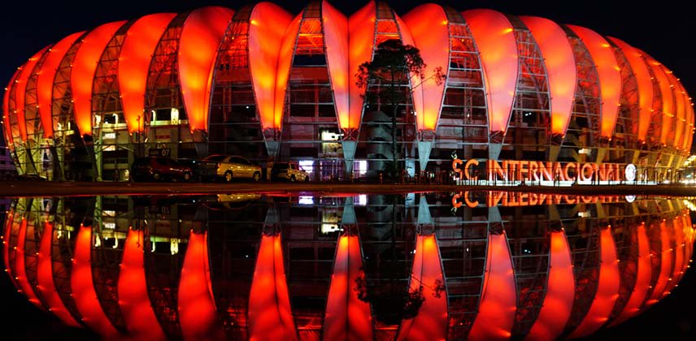
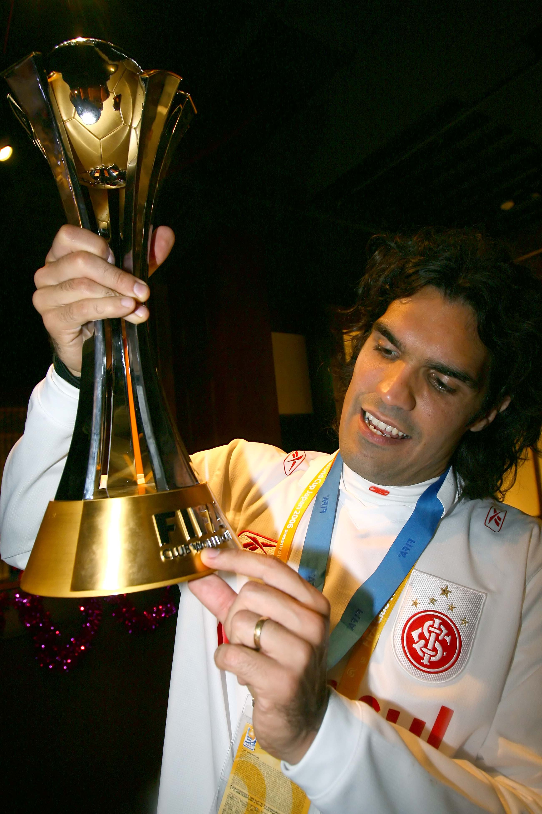

....

Foi um futebolista, treinador, dirigente e comentarista esportivo brasileiro. Atacante, foi ídolo do Goiás e
do Internacional, onde recebeu a alcunha de Eterno Capitão Colorado.
(Goiânia, 18 de março de 1978 — Aruanã, 7 de junho de 2014)

Carreira como Jogador
Iniciou sua carreira nas categorias de base do Goiás como meia, e aos dezesseis anos passou a jogar
bola no time profissional. Foi no Esmeraldino onde passou a ter destaque no cenário futebolístico,
entre 1995 e 2001, quando conquistou cinco Campeonatos Goianos, duas Copas Centro-Oeste e um
Brasileiro da Série B na posição de meio-campo.
Devido ao seu futebol de grande técnica e seus cabeceios certeiros, teve a oportunidade de ir para a Europa, onde jogou pelo Olympique de Marseille, por quase três anos, depois foi transferido para o Toulouse, também da França. Lá começou a jogar como atacante.
Na volta para o Brasil, Fernandão foi para o Internacional, sendo que Fernando Carvalho, presidente do Internacional na época, fez grande esforço para contratar o jogador. Foi no Inter onde atingiu seu melhor momento no futebol. Logo em seu jogo de estreia, marcou o milésimo gol da história do Clássico Grenal, feito que lhe rendeu uma placa e o fez cair nas graças da torcida colorada.
Após se adaptar rapidamente ao futebol gaúcho, chegou a vestir a camisa da Seleção Brasileira em uma partida amistosa contra a Seleção da Guatemala.
Em 2006, Fernandão foi o capitão do time que deu ao Internacional os seus dois maiores títulos: a Copa Libertadores da América e a Copa do Mundo de Clubes da FIFA. Ele foi decisivo, marcando um gol e dando passe para o outro na grande final da Libertadores contra o São Paulo, partida na qual foi eleito pela patrocinadora do torneio melhor jogador em campo.
Na conquista da Copa Dubai de 2008 foi fundamental para o Inter, fazendo um gol de fora da área contra a Internazionale.
Em 14 de junho de 2008, foi anunciada a sua transferência para o Al-Gharafa. Fernandão saiu do Internacional como um dos maiores ídolos da história do time. E prometeu voltar ao clube futuramente, seja como dirigente, seja como jogador ou seja como torcedor, sendo considerado por muitos como o maior ídolo da história colorada.
No dia 30 de julho de 2009, rescindiu seu contrato com o Al-Gharafa e, após muita especulação por parte de vários clubes, como São Paulo, Internacional e Santos, acertou com o clube que o revelou, o Goiás.
Devido ao seu futebol de grande técnica e seus cabeceios certeiros, teve a oportunidade de ir para a Europa, onde jogou pelo Olympique de Marseille, por quase três anos, depois foi transferido para o Toulouse, também da França. Lá começou a jogar como atacante.
Na volta para o Brasil, Fernandão foi para o Internacional, sendo que Fernando Carvalho, presidente do Internacional na época, fez grande esforço para contratar o jogador. Foi no Inter onde atingiu seu melhor momento no futebol. Logo em seu jogo de estreia, marcou o milésimo gol da história do Clássico Grenal, feito que lhe rendeu uma placa e o fez cair nas graças da torcida colorada.
Após se adaptar rapidamente ao futebol gaúcho, chegou a vestir a camisa da Seleção Brasileira em uma partida amistosa contra a Seleção da Guatemala.
Em 2006, Fernandão foi o capitão do time que deu ao Internacional os seus dois maiores títulos: a Copa Libertadores da América e a Copa do Mundo de Clubes da FIFA. Ele foi decisivo, marcando um gol e dando passe para o outro na grande final da Libertadores contra o São Paulo, partida na qual foi eleito pela patrocinadora do torneio melhor jogador em campo.
Na conquista da Copa Dubai de 2008 foi fundamental para o Inter, fazendo um gol de fora da área contra a Internazionale.
Em 14 de junho de 2008, foi anunciada a sua transferência para o Al-Gharafa. Fernandão saiu do Internacional como um dos maiores ídolos da história do time. E prometeu voltar ao clube futuramente, seja como dirigente, seja como jogador ou seja como torcedor, sendo considerado por muitos como o maior ídolo da história colorada.
No dia 30 de julho de 2009, rescindiu seu contrato com o Al-Gharafa e, após muita especulação por parte de vários clubes, como São Paulo, Internacional e Santos, acertou com o clube que o revelou, o Goiás.
Títulos como Jogador

Goiás
- Campeonato Brasileiro da Série B: 1999
- Copa Centro-Oeste: 2000 e 2001
- Campeonato Goiano: 1996, 1997, 1998, 1999 e 2000
Internacional
- Copa do Mundo de Clubes da FIFA: 2006
- Copa Libertadores da América: 2006
- Recopa Sul-Americana: 2007
- Copa Dubai: 2008
- Campeonato Gaúcho: 2005 e 2008
Al-Gharafa
- Liga do Qatar: 2009
- Copa do Qatar: 2009